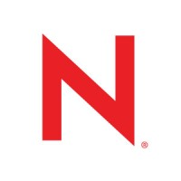
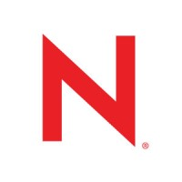
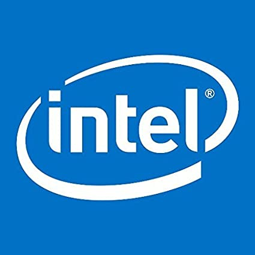
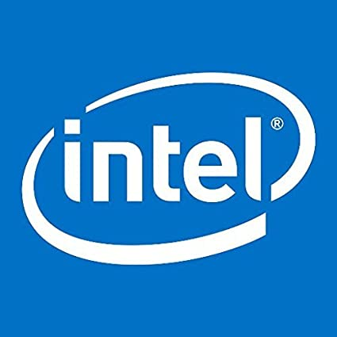

Qu'est-ce que Linux ?
Qu'est-ce que Linux ? Installer Linux
Installer Linux Newsletter
Newsletter Membres
MembresL'invention de Linus Torvalds

Quelques informations sur Linux et son noyau
- Créateur : Linus Torvalds
- Nom : Linux
- Type de noyau : Monolithique modulaire
- Première version : 0.0.1 (17 sepptembre 1991)
- État du projet : Actif
- Plates-formes : ARM, DEC Alpha, Itanium, PA-RISC, PowerPC, SPARC, x86, x86-64, IA-64, MIPS, SuperH, z/Architecture
- Licence : GNU GPL v2
- Site web : www.kernel.org
Photo de OS-2
Bref histoire 🌍
En 1991, l'ordinateur personnel (PC) se développe de plus en plus et ces PC (personnal computer) sont équipés de processeurs Intel 386 ou 486. Linus Torvalds, étudiant en informatique à l'université d'Helsinki, utilise un PC équipé d'un processeur 386. Il est alors confronté à un problème : il ne trouve pas de système d'exploitation qui lui convienne. Il décide donc de créer son propre système d'exploitation. Il s'inspire du système d'exploitation Minix, un système d'exploitation libre créé par Andrew Tanenbaum, un professeur d'informatique à l'université libre d'Amsterdam. Linus Torvalds décide de nommer son système d'exploitation Linux, en référence à son prénom et à Minix. Il publie son système d'exploitation sur Internet et demande aux internautes de l'aider à l'améliorer. Très vite, des milliers de programmeurs du monde entier se mettent à travailler sur Linux. En 1994, Linus Torvalds décide de créer une fondation, la Linux Foundation, pour gérer le développement de Linux. Aujourd'hui, Linux est le système d'exploitation le plus utilisé au monde. Il est utilisé sur les serveurs, les smartphones, les tablettes, les téléviseurs, les consoles de jeux vidéo, les appareils photo, les appareils électroménagers, les voitures, les avions, les trains, les robots, les supercalculateurs, etc.
Introduction au développement du noyau Linux
Si au début de son histoire le développement du noyau Linux était assuré par des développeurs bénévoles, les principaux contributeurs sont aujourd'hui un ensemble d'entreprises, souvent concurrentes, comme Red Hat, Novell, IBM ou Intel13. IBM possédait son propre UNIX, nommé AIX, mais le passage à Linux - outre qu'il permet d'affecter à d'autres projets les développeurs et mainteneurs d'AIX - présente aussi l'avantage de permettre une reprise, sans difficulté de portage d'applications ni nouvelle formation des équipes informatiques, de serveurs Linux PC vers des Linux sur ses séries i, p et z. La licence du noyau Linux est la licence publique générale GNU dans sa version 2. Cette licence est libre, ce qui permet d'utiliser, copier et modifier le code source selon ses envies ou ses besoins. Ainsi, quiconque a les connaissances nécessaires peut participer aux tests et à l'évolution du noyau.
 

 

Liste des partenaires Linux Foundation
Caractéristiques techniques
Comme tous les programmes informatiques, le noyau Linux est écrit sous forme de code source, et doit être transformé en binaire exécutable pour être compris par le microprocesseur.
Dans la mesure où le code source du noyau Linux contient une très grande quantité de fonctionnalités, l'utilisateur peut choisir de n'intégrer que celles qui lui sont utiles ou les mieux adaptées (de nombreuses fonctionnalités sont concurrentes) : c'est l'étape de configuration du noyau.
La grande majorité des distributions GNU/Linux installent un noyau compilé préalablement qui répond aux besoins des postes de travail et serveurs. Il est donc rare qu'un utilisateur de Linux ait à compiler un noyau. La compilation permet d'adapter le noyau à des besoins spécifiques comme le support de matériels peu répandus, l'activation de fonctionnalités expérimentales ou l'adaptation à des plateformes particulières comme des systèmes embarqués.
Le code source du noyau Linux est disponible sur le site kernel.org [archive], mais les distributions GNU/Linux fournissent également des sources empaquetées sur leurs dépôts.
L'étape la plus importante de la compilation d'un noyau personnalisée est la configuration du noyau. Les options de configuration sont déclarées dans le fichier .config, chacun correspond à une fonctionnalité du noyau, qu'on décide d'utiliser ou non. Trois choix sont généralement possibles :
• Y : la fonctionnalité est compilée et implantée dans l'image du noyau
• M : la fonctionnalité est compilée comme module
• N : la fonctionnalité est ignorée
Certaines options consistent en un choix binaire : la fonctionnalité est incluse dans l'image noyau ou n'est pas compilée.
Il existe plusieurs outils pour régler la configuration :
make config : programme en mode texte qui énumère toutes les options et demande d'entrer son choix
make menuconfig : utilitaire en mode texte écrit avec ncurses, il permet une navigation plus aisée dans la configuration
make gconfig : outil graphique basé sur GTK+
make xconfig : outil graphique basé sur Qt
make defconfig : outil permettant de récupérer les paramètres de configuration par défaut du noyau. Ces paramètres sont donnés par les développeurs du noyau à chaque nouvelle sortie du noyau.
make oldconfig : outil permettant de récupérer les paramètres de configuration d'une ancienne version du noyau afin de ne pas recommencer la configuration à zéro.
make olddefconfig : outil permettant de récupérer les paramètres de configuration par défaut du noyau et de mettre les autres paramètres par défaut.
make localmodconfig : outil permettant de récupérer les paramètres de configuration du noyau tournant actuellement sur la machine afin de ne charger que les modules nécessaires.
La compilation du noyau et des modules se fait par la commande make. Cette opération peut être assez longue, cependant l'utilisation de l'argument -j permet de réduire le temps de compilation. Ceci au détriment de la réactivité des autres programmes et donc du système d'exploitation. L'installation est automatisée, les commandes make install et make modules_install permettent respectivement d'installer l'image du noyau et ses modules.
Pour permettre l'amorçage du système avec la nouvelle image de noyau, il est nécessaire de configurer le chargeur de démarrage (LILO, GRUB) pour qu'il exécute l'image du noyau au démarrage. Avec (GRUB, GRUB2) la commande update-grub automatise la configuration.
La distribution Debian fournit un utilitaire, make-kpkg qui automatise les étapes ci-dessus et crée des paquets Debian. Ceci permet ensuite un déploiement facile sur un grand nombre de machines. Sinon, toujours pour debian, on peut entrer les commandes sudo su ; make menuconfig ; make deb-pkg ; cd ../ ; dpkg -i *deb
La mascotte Tux crée par Larry Ewin en 1996. Son nom vient de "tuxedo" qui signifie "smoking".
La critique sur Linux 💥
Brad Spengler, développeur chez grsecurity, accuse le noyau Linux de centrer parfois ses efforts sur les fonctionnalités au détriment de la sécurité. Il prétend que Linus Torvalds lui aurait dit ne pas être intéressé par l’ajout d’options de sécurité utiles pour éviter des dépassements de tampon, car cela ralentirait le chargement des applications102. Il reproche l’absence d’une personne chargée officiellement de la sécurité, avec qui il serait possible de communiquer en privé en toute sécurité. À la place, la seule solution est d’envoyer un courriel sur une liste de diffusion relative aux questions de sécurité où les failles découvertes sont parfois utilisées à des fins malveillantes avant qu’une mise à jour de sécurité ne soit diffusée, alors que les usagers de Linux ne sont pas au courant de l’existence de cette faille102. Enfin, il remet en cause l’implantation du système LSM depuis la version 2.6 du noyau qui aurait été implanté par laxisme et aurait facilité l’insertion de rootkits invisibles au sein du système en les faisant passer pour des modules de sécurité103. Cette critique n’est plus d’actualité grâce aux modifications apportées depuis la version 2.6.24104.
Linux > Windows ?
Linux, son idéologie et ses forces 💘
Sa beauté
Bien que pour la plupart des utilsateurs d'un ordinateur personnel, Linux et ses distributions soient plus embétant qu'autres choses, Linux a en effet des qualités inégalables à celles de Windows et de MacOS. Ce n'est plus la personne qui écrit des articles qui vous parle mais bien d'un linux-lover, et arch-user.
Tout d'abord, Linus Torvalds a dit un jour "ce monde pourrait être un endroit bien meilleur si les gens avaient moins d’idéologie", c'est une personnage très pragrmatique et le revendiquait. Il y avait un combat entre l'idéologie et le pragmatisme et Linus préférait donc les choses fonctionnelles aux idées et autres doctrines et façon de penser qui clairement ne faisaient pas avancer les choses bien que l'idée soit au début de quasiment toute création.
La beauté de Linux et de cette non-idéologie et son pragmatisme est aussi admirable par le fait que Linux soit un noyau libre ou toute le monde, peu importe son niveau, peut contribuer à son développement. C'est un noyau qui est open-source et qui est gratuit et modifiable par n'importe qui, c'est cela qui fait la beauté de Linux, l'espace communautaire que Windows n'a pas ou n'a pas aussi fortement. Tout le monde, à partir du kernel Linux peut faire sa propre distribution ou améliorer ce qu'il souhaite.
Du point de vue sécurité, beaucoup ont tendance à dire que les distributions Linux ne sont pas sécurisées, mais c'est une idée reçu et totalement faux, bien que Linux ne soit pas parfait, à n'importe quelle brêche d'ouvert des milliers d'utilisateurs sont là pour la réparer.
Une autre force selon moi qui fait avancer Linux à grand pas et qu'il n'y est pas de systèmes dominants, il y a une concurrence entre les distributions Linux qui fait que les développeurs sont obligés de se surpasser pour que leur distribution soit la plus utilisée et la plus appréciée, mais il n'y a pas un aussi grand écart par rapport à Windows aujourd'hui, donc tout le monde peut trouver ce qu'il souhaite, quand il le souhaite, grantuitement et librement. Et même si il y a des majorants, les petites distributions y trouvent leurs places !
Et pour finir, Linux est un système d'exploitation qui est léger, rapide et stable, il est donc parfait pour les serveurs, les machines virtuelles, les ordinateurs de faibles puissances et les ordinateurs de hautes puissances. Il est donc polyvalent et adaptable à toutes les situations.


Liste des différents distributions les plus utilisées, basées sur Linux en 2023
Ses forces
Comme dit précédemment, Linux est un système d'exploitation qui est léger, rapide et stable, il est donc parfait pour les serveurs, les machines virtuelles, les ordinateurs de faibles puissances et les ordinateurs de hautes puissances. Il est donc polyvalent et adaptable à toutes les situations.
Cependant, il n'a pas tout ce qu'il faut pour être le plus puissant possible. Pour cela, il faudrait faire des modifications sur par exemple les drivers Nvidia, certaines études montre que sans les drivers Nvidia, Linux est plus lent que Windows, mais cela est dû à Nvidia qui ne veut pas partager ses drivers avec la communauté Linux. Sans cela, avec les même composants qu'un ordinateur qui tourne sur Windows et avec les bons drivers de la bonne carte graphique, il est montré (que pour les graphismes) Linux est plus puissant. Cependant, les cartes graphiques et les drivers sont anciens, et c'est tout simplement dû au developpement de ces drivers car comme dit précedemment, Nvidia ne passe pas les drivers des nouvelles cartes, il faut donc faire du "reverse-engineering", c'est à dire, partir à zéro et imaginer que la carte en face de nous n'est tout simplement qu'une boite noir, à deméler.
Tout çela, c'est aussi une question d'argent, et de pouvoir. En effet Windows c'est Microsoft, et Microsoft sont les "amis" de Intel, qui nouent des liens avec d'autres entreprises. Il est donc difficilement possible de faire des drivers pour Linux, après cela, certains sont en train de construire des processeurs plus puissant que ce vu aujourd'hui LE RISC-5
Cette article n'est pas dédié à ça donc nous n'allons pas rentré dans les détails !